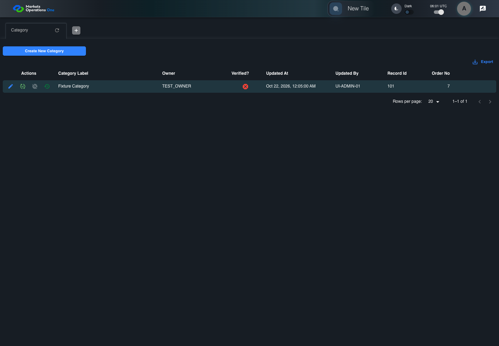

UI-ADM-GRD-006 actual administration UI with step evidence
PASS · application/run-050/ui-adm-grd-006-actual-administration-ui-with-step-evidence-111126f1ca33-attempt-1 · ACTUAL_APPLICATION_LOCAL_SERVICES
Actual current React administration screens. Controlled browser login supplies UI-ADMIN-01 and TEST_OWNER, or the declared SUPER_USER. Controlled BFF routes return the case-declared records. Other controlled saves persist submitted field values. This run establishes frontend handling only. It does not execute BFF validation, storage, audit generation, or authorization.
2026-10-22T06:01:20.718Z to 2026-10-22T06:01:23.842Z
Assertions and result · Artifact manifest · Exact run inputs and source hashes
Result SHA-256:2cf8129528c48023b5277fd50173730a04c450159169b89143108d39c1c3219bMachine observations
- ui-origin-admin-requests.json
df1af30f8e2caf9f44be26842b2d1bf16d02773aaca4e9ce4baefbdfe227c562
Screenshot capture: CAPTURED. Named frames: 6.
Step screenshot evidence: COMPLETE. 5/5 canonical steps have execution screenshots.
Canonical step timeline
Given Admin A is authenticated as fixture UI-ADMIN-01 with the case-specific permissions
Execution: PASSED.
1. step-01 Visible state after step 1: Given Admin A is authenticated as fixture UI-ADMIN-01 with the case-specific permissions
2026-10-22T06:01:22.218Z · 1440×1000
Step: /Users/lushevol/code/github/ratan-release-impact/workbench/tasks/ui-test-coverage-20261022/test-cases.md:10009
SHA-256:e2fecea69f4b5e4c51bcbaa02ec757835da891f94c1c5ab30ccdcdea7ec7548fAnd Category record 101 is visible
Execution: PASSED.When Admin A clicks cell named "Category Label" inside row with Record Id "101" in the "Category" administration data grid
Execution: PASSED.
3. step-03 Visible state after step 3: When Admin A clicks cell named "Category Label" inside row with Record Id "101" in the "Category" administration data grid
2026-10-22T06:01:23.277Z · 1440×1000
Step: /Users/lushevol/code/github/ratan-release-impact/workbench/tasks/ui-test-coverage-20261022/test-cases.md:10011
SHA-256:a27a49aba8c1197272e4c1ea85a8005aa60ac4e8226113f537f0e0736430ce7dThen dialog named "edit ID: 101" inside the "Category" administration tabpanel is absent
Execution: PASSED.
4. step-04 Visible state after step 4: Then dialog named "edit ID: 101" inside the "Category" administration tabpanel is absent
2026-10-22T06:01:23.341Z · 1440×1000
Step: /Users/lushevol/code/github/ratan-release-impact/workbench/tasks/ui-test-coverage-20261022/test-cases.md:10012
SHA-256:a27a49aba8c1197272e4c1ea85a8005aa60ac4e8226113f537f0e0736430ce7dAnd dialog named "verify ID: 101" inside the "Category" administration tabpanel is absent
Execution: PASSED.
5. step-05 Visible state after step 5: And dialog named "verify ID: 101" inside the "Category" administration tabpanel is absent
2026-10-22T06:01:23.407Z · 1440×1000
Step: /Users/lushevol/code/github/ratan-release-impact/workbench/tasks/ui-test-coverage-20261022/test-cases.md:10013
SHA-256:a27a49aba8c1197272e4c1ea85a8005aa60ac4e8226113f537f0e0736430ce7d
Additional named frames

The final visible state after the named test assertions.
2026-10-22T06:01:23.487Z · 1440×1000Step: Test source: /Users/lushevol/code/github/ratan-release-impact/workbench/e2e/audit-specs/admin-expanded.spec.ts:15
SHA-256:
a27a49aba8c1197272e4c1ea85a8005aa60ac4e8226113f537f0e0736430ce7dScreenshots establish visible state only. Assertions and traces support functional claims.